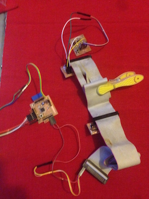
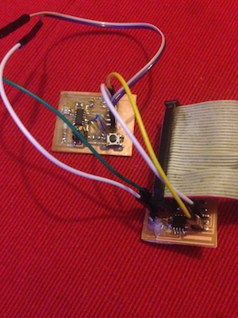
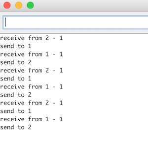

13- Networking
Intro
The goal for this assignment was to made two or more microcontroller communicate. It is important becuse sometime you could need to connect two or more boards working together. As in the previous assignment I used the serial protocol to communicate between the board and my pc I decided to experiment the I2C protocol.
Making and connecting the boards
The I2C is a very useful wired protocol as it uses only two wires: the SCL (for the clock) and SDA (for the data) (look at the images below). There is a master that can have multiple slaves, each one with a specific address. The master can send messages to the slaves and scans request messages from them. For this reason I milled two boards taking the design from the FabAcademy page. I made a Hello I2C bridge and a Hello I2C node (that has also a led, very useful for testing). I used also a Fabkit (made in a previous assignment) as a master.
(the node)

(the bridge)

As first test I started sending just a number (one byte) from the master (the FabKit) to the slave (hello 45 node) and then checking for an answer (the echo of the number sent).
To connect the bords you can see the image above (SDA,SCL pins). The FabKit has the SCL and SDA pins on PC5 and PC4 (A05 and A04 in the Arduino IDE). I powered the Fabkit (the master) wuth an FTDI cable. The other boards are poweverd by the master, connecting the vcc and the gnd. I used a ribbon cable taken from an old pc for all these connections.
I used the Arduino IDE to program the boards. I already installed the definition for ATTiny 45 in a previous assignment.
In the Arduino IDE I tried to use the Wire library However it doesn’t compile for the ATTiny so I had to use http://playground.arduino.cc/Code/USIi2c. For the FabKit I used the Wire library included in the Arduino IDE.
The master sends one byte representing an integer between 0 and 255
byte x = 7;
Wire.beginTransmission(SLAVE1_ADDR); // transmit to a slave device
Wire.write(x); // sends one byte
Wire.endTransmission(); // stop transmitting
I put a delay of 400 milliseconds to allow the slave receive the command and then ask back for a feedback
Wire.requestFrom(ADDR, 1);
In the meantime the slave receives the command, sends it back to the master and blinks for the number of times corresponding to the integer transmitted.
byte byteRcvd = 0;
if (TinyWireS.available()){ // got I2C input!
byteRcvd = TinyWireS.receive(); // get the byte from master
TinyWireS.send(byteRcvd); // send it back to master
Blink(LED1_PIN,byteRcvd); // blink
To make a more interesting test I decided to connect simultaneously the Hello node, the Hello bridge and the Hello board (made in a previous assignment).
To connect the 3 boards I used a ribbon cable taken from an old pc.I used two jumpers between the Bridge and the Hello board. In the images below you can see at left: Fabkit -> Hello Node -> Hello Bridge -> Hello Board. At right a detail of the Bridge with the Hello Board.
 
As the bridge board doesn't have any led on it, to physically show the result of the communication, I used the serial communication between the bridge and the Hello board to turn on the led of the Hello board. The bridge receives an integer from the master thorugh I2C communication, then takes the number and sends it to the Hello board with the serial. The serial communication of the Hello Board is made with the software serial library. The number is used to decide how many times the led has to blink.
Then I used serial communication between the Fabkit and my laptop to have debug messages.

Here you can see a video showing the different boards working together.
Networking using I2C and serial communication from Massimiliano Dibitonto on Vimeo.
Moreover you can see here the complete code of the master:
And the code for the node:
For the bridge:
And for the Hello board:
 Attribution, non-commercial, share alike.
Attribution, non-commercial, share alike.